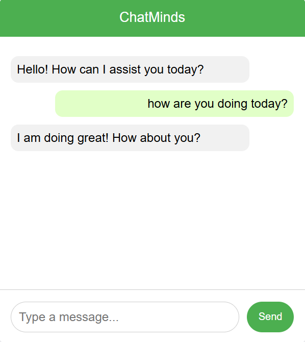

ChatMinds
Meet my AI-Powered Chatbot—constantly learning and evolving to provide better, more natural conversations with every interaction. Built using Python and TensorFlow, it integrates a dynamic knowledge base to respond to various topics while improving over time.

Table of Contents
Development Process
The development of the ChatMinds AI-powered chatbot focused on continuous learning and iterative improvement. Initially, the chatbot was designed to handle basic conversations, but the goal was to build an adaptable system that evolves with each interaction.
Key milestones in the development process included:
- Designing the AI Architecture: The chatbot was built using Python and TensorFlow, implementing deep learning techniques to enable it to process and understand natural language.
- Data Collection and Processing: A large dataset was gathered, with clean and structured data being processed using tools like NumPy and Pandas. This data fed the model during its training phase to ensure accurate response generation.
- Creating the Knowledge Base: A dynamic knowledge base was integrated, using JSON to store various scenarios, user intents, and possible responses. The chatbot continuously updates its knowledge base as new data is collected.
- Model Training: The chatbot's neural network was trained on labeled datasets, with constant updates being pushed into the model, allowing it to become more accurate over time.
- Continuous Feedback Loop: A feedback loop was established to evaluate the chatbot’s performance, with new interactions being constantly fed into the training model. Tools like TensorBoard were used to monitor and track progress.
- Testing and Validation: Rigorous testing was performed using both automated tests and live interactions, ensuring that the chatbot’s responses were meaningful and coherent.
Features
The AI-powered ChatMinds chatbot offers several key features:
- Natural Language Processing (NLP): Built using advanced NLP techniques, the chatbot can understand and respond to a variety of user inputs.
- Continuous Learning: The chatbot evolves with each conversation, learning new patterns and improving over time to offer more personalized responses.
- Context-Aware Conversations: It remembers the context of conversations and can offer relevant follow-up responses based on past interactions.
- Multi-Topic Coverage: Capable of discussing a wide range of topics, from casual chats to specific queries, the chatbot’s knowledge base keeps expanding with every update.
- Customizable Response Generation: The chatbot uses neural networks to generate tailored responses, offering a more natural and engaging interaction.
- Data Analytics Integration: Uses tools like NumPy and Pandas for in-depth analysis of interactions and behavior, enabling data-driven improvements.
Learning and Testing
To ensure the chatbot continues to improve and provide accurate, context-aware responses, a robust testing and learning pipeline was implemented. Each interaction provides feedback that is stored and used for retraining the model. This allows the chatbot to adapt to new conversational patterns and user inputs.
Key components of the learning and testing process include:
- Model Retraining: The chatbot model is retrained periodically using fresh data, ensuring it remains accurate and responsive to new user interactions.
- Automated Testing: Continuous unit tests and integration tests are performed using Postman and other testing tools to validate that the system performs as expected.